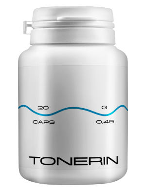

Bluthochdruck, schmutzige Blutgefäße und ein krankes Herz sind die
Ursache für den vorzeitigen Tod. Wie kann man das vermeiden?
Martin Schneider
07.06.2022
Jeder weiß, dass Blutdruck, Schlaganfall und Herzinfarkt die Folgen
einer "Verschmutzung" der Blutgefäße mit Cholesterin sind. Doch nur wenige Menschen
verstehen, dass dies nur die Spitze des Eisbergs ist. "Schmutzige" Gefäße sind der
Schuldige für 9 von 10 angeblich unheilbaren chronischen Krankheiten.
Bluthochdruck ist eine Krankheit, an der jeder dritte Erwachsene in Deutschland leidet,
ein großer Teil der Bevölkerung ist sich des Problems nicht bewusst und ergreift daher keine
Maßnahmen. Unter Menschen, die sich ihrer eigenen Krankheit bewusst sind, werden viele falsch
behandelt: sie nehmen Medikamente unregelmäßig oder gar nicht ein, oder in zu kleinen Dosen
usw. Leider hat eine jahrelange falsche Blutdruckkontrolle nachteilige Auswirkungen auf das
Herz-Kreislauf-System und die Nieren und verursacht zahlreiche, gesundheits-und lebensbedrohliche
Komplikationen.
Was sollte ein Hypertoniker wissen?
Warum machen Blutgefäße 85% Ihrer Gesundheit aus?
Womit sind die Blutgefäße außer Cholesterin noch verschmutzt?
4 offene und 7 weitere versteckte Anzeichen für eine schlechte Gesundheit
der Blutgefäße
Wie kann man Blutgefäße zu Hause sicher reinigen?
Diese Fragen beantwortet der Leiter der Klinik für Lungenkreislauf,
Thromboembolien und Kardiologie des CMCP im Europäischen Gesundheitszentrum in Berlin. In den
Jahren 2004-2007 war er Vorsitzender der Deutschen Kardiologischen Gesellschaft. Vizepräsident
der Europäischen Gesellschaft für Kardiologie, Professor Paul Weber.
Martin Schneider: Herr Weber, Sie sagen immer, dass
Blutgefäße 85% der Gesundheit des Körpers ausmachen? Warum ist das so?
Was ist das größte Organ im menschlichen Körper? Nur wenige wissen es.
Selbst Medizinstudenten irren sich oft. Am häufigsten wird gesagt, dass das Gehirn und die Leber
sind. Gebildete Leute werden sagen, dass es Haut ist. In der Tat ist das größte Organ unser
Kreislaufsystem. Gefäße sind nicht nur Rohre, durch die Blut fließt. Es ist ein
komplexes, einheitliches Organ, dessen Zerstörung sofort zu Leiden führt.
Kranke Beingefäße - Krampfadern, ständige
Schwellung und ewige Schwere in den Beinen, ein Gefühl von Kälte oder ein unerträgliches
Brennen in den Beinen. Rissige Fersen. Schlechte Durchblutung - fehlender Schutz gegen Bakterien und
damit Pilze. Die Nägel werden dick und lang.
Verstopfte Gefäße, die die Leber ernähren –
Hepatitis. Bitterer Geschmack im Mund. Bitterkeit im Mund nach dem Verzehr von
fetthaltigen Lebensmitteln.
Geschwächte und verschmutzte Gefäße in den Gelenken -
Austrocknung des Knorpelgewebes. Gelenke schießen und schmerzen, Osteochondrose
entwickelt sich, Hernien treten auf.
Schwächung der Analgefäße –
Hämorrhoide
Blutgefäße des Auges - Sehvermögen
verschlechtert sich, "Fliegen" erscheinen vor den Augen, die Klarheit wird reduziert.
Katarakte entwickeln sich. Die Rötung der Augen, die wir oft mit Müdigkeit verwechseln, ist
eigentlich eine Mikroblutung - ein Bruch der kleinsten Kapillaren des Auges. Und natürlich die
Königin der Gefäßerkrankungen ist ihre Majestät Bluthochdruck. Und Bluthochdruck ist
die Mutter eines Schlaganfalls und die Schwester eines Herzinfarkts.
„Ohne Gesundheit gibt es kein Glück“ – und "ohne saubere
Gefäße gibt es keine Gesundheit“
"Verstopfte" Gefäße - Hunger aller Organe.
Zum Beispiel, Übergewicht ist eng mit den Blutgefäßen
verbunden. Mit Cholesterin verstopfte Gefäße lassen die Organe verhungern, und die
Blutgefäße können sie nicht mit genügend Nährstoffen versorgen. Daher sendet
das Gehirn Signale, was zu essen ist. Und der Mensch isst. Unsere Organe erhalten jedoch aufgrund einer
Blockierung der Blutgefäße immer noch nicht die richtige Menge an Nährstoffen. Dann
drängt uns das Gehirn wieder zu essen. Und dieser Prozess wiederholt sich
ständig.
Daher der ständige Bedarf an Snacks, Heißhunger auf Süßes
und Salziges – der Körper braucht Kalorien.
Wenn Kollegen den Patienten sagen: "Sie haben aufgrund von Übergewicht hohen
Blutdruck." Sie irren sich in Bezug auf die Ursache des Problems. Bluthochdruck wird nicht durch
Übergewicht verursacht. Und Übergewicht wird durch Bluthochdruck
verursacht.
Deshalb werde ich nie aufhören zu wiederholen: Wenn Sie ein erfülltes Leben
führen wollen – reinigen Sie und reparieren Sie die Gefäße. Saubere Gefäße sind
der Schlüssel, um 90% der chronischen Krankheiten loszuwerden, von denen einige als
"unheilbar"gelten.
"Wenn ein normaler Querschnitt eines Gefäßes fingerdick ist,
reduzieren 5 kg Cholesterin-Plaques den Querschnitt auf die Größe von 4
Streichhölzern"
Martin Schneider:Herr Weber, jeder weiß,
dass Cholesterin schlecht ist. Es verstopft unsere Blutgefäße, verengt den Fluss und
stört die Durchblutung. Aber ist er nicht der einzige Täter?
- Nein, nicht nur er. Cholesterin-Plaques, auch bekannt als "atherosklerotische
Plaques", sind für etwa 60 bis 70% der Gefäßverschmutzung
verantwortlich.
Im Alter von 50 Jahren sammeln sich bis zu 5 kg Cholesterin-Plaques in den
Blutgefäßen einer Person an. Cholesterinablagerungen verengen den Fluss in den
Gefäßen um das 4-5-fache.
5 kg Gesamtmasse an Schadstoffen, die sich im Alter von 50 Jahren in
Gefäßen angesammelt haben
CHOLESTERIN
BLOCKIERENDE MASSE
KALZIFIZIERUNG
Cholesterin-Plaques sind nicht lebensbedrohlich. Ja, wegen ihnen nimmt die
Lebensqualität ab, der Blutdruck steigt, Kopfschmerzen, Gelenkschmerzen, Schwäche und Apathie
nehmen zu. Aber viel gefährlicher sind Blutgerinnsel, die sich auch in unseren Gefäßen
ansammeln.
Blutgerinnsel sammeln sich viel weniger an, "nur" etwa 800 g - 1000 g. Ihre
Bedrohung liegt jedoch in ihrer Instabilität. Zu jedem Zeitpunkt kann sich ein Blutgerinnsel
(Blutgerinnsel) lösen und sich auf die Suche nach einem Opfer begeben.
Wenn das Gerinnsel
groß genug ist, "verstopft" es das Gefäß des Opfers fest. Ischämie tritt auf - eine vollständige
Unterbrechung der Blutversorgung des von diesem Gefäß gespeisten Organs.
Ein ischämischer
Schlaganfall ist eine Blockade der Blutgefäße im Gehirn. Ein Herzinfarkt ist eine Blockade einer
Herzschlagader. Leberischämie, Pneumothorax, Nierenversagen. Hämorrhoiden sind eigentlich eine
Ischämie der Analgefäße. Verstopfung selbst der kleinsten Gefäße an den Beinen führt schließlich
zu Nekrose - Gangrän.
Verkalkung der Gefäße verursachen Rückstände von chemischen Präparaten und
Nahrungsergänzungsmitteln. Sie sammeln sich im Alter von 50 Jahren in einer Menge von 300-400
Gramm an. Die meisten Verkalkungen treten in den Gefäßen des Gehirns auf.
Verkalkung ist
aufgrund seiner scharfen Kristallstruktur gefährlich. Bei starker Verengung - ein Krampf des
Gefäßes, der durch Stress oder körperliche Anstrengung oder Wetter verursacht wird, kann ein
scharfer Verkalkungskristall das Gefäß durchbohren und zum Bruch führen. Und zerrissene Gefäße
des Gehirns führen zu einem hämorrhagischen Schlaganfall.
4 offene und 7 weitere versteckte Anzeichen für eine schlechte
Gesundheit der Blutgefäße
Wenn Sie über 45 Jahre alt sind und noch nie Nutrazeutika zur Reinigung von
Blutgefäßen eingenommen haben, garantiere ich Ihnen, dass Sie Probleme mit
Blutgefäßen haben.
Blutgefäße, die mit Cholesterin verstopft sind, Blutgerinnsel, Verkalkung
sind praktisch natürliche Alterungsprozesse. Natürlich beschleunigen die heutigen
Lebensmittel, Medikamente, Rauchen und Alkohol den Prozess der "Verschmutzung" um das 5- bis
8-fache. Aber wir sind alle Menschen, und warum verstecken wir uns, wir leben in einer solchen
Welt.
Wenn bei Ihnen Bluthochdruck diagnostiziert wurde, gibt es nicht einmal mehr zu
hören. Bluthochdruck ist die Königin der kranken Blutgefäße.
Leiden Sie unter Druckstößen? Der Blutdruck ist ständig erhöht und
Sie müssen Medikamente nehmen? Also, in den Gefäßen bleiben 30% des Kanals übrig.
Der Rest ist dick mit Cholesterin-Plaques, Blutgerinnseln und mit Verkalkung
bedeckt.
Daher wirkt sich der geringste Stress, der Wechsel des Wetters, magnetische Stürme
sofort auf das Wohlbefinden aus. Der Druck steigt, der Kopf beginnt zu summen, die Gelenke
knistern.
4 Krankheiten, die durch kranke Gefäße verursacht werden:
1. "Bluthochdruck"
Schreckliche, geschwollene Venen an den
Beinen, Schwere und Schmerzen, Schwellungen. Cholesterin und Blutgerinnsel “verstopfen" die
Venen. Allmählich erscheinen vaskuläre "Sternchen", die sich dann in ein
Gefäßnetz verwandeln. Und aus dem Netz werden schon komplette Krampfadern.
2. "Varikose"
Schreckliche, geschwollene Venen an den Beinen,
Schwere und Schmerzen, Schwellungen. Cholesterin und Blutgerinnsel “verstopfen" die Venen.
Allmählich erscheinen vaskuläre "Sternchen", die sich dann in ein
Gefäßnetz verwandeln. Und aus dem Netz werden schon komplette Krampfadern.
3. Hämorrhoiden
Wenn die Analgefäße verstopft sind,
schwellen die Hämorrhoiden an. Wenn die Blutgefäße zuerst verstopft werden, tritt
ein Analfissus auf.
4. Osteochondrose
Dies ist der Mangel an Blutzirkulation im Knorpel. Der
Knorpel trocknet aus und beginnt sich zu verschleißen, ohne sich zu erholen. Er erholt sich
nicht und trocknet aus. Er verliert die Stützfähigkeit. Salze werden nicht
ausgewaschen und sammeln sich unkontrolliert an und bilden einen „Witwen“-Buckel.
7 Warnzeichen:
1. Ödem
Verschmutzte Gefäße haben keine Zeit,
Flüssigkeiten zu entfernen. Sie stören den Wasser-Salz-Stoffwechsel. Abends schwellen
die Beine an, so dass sich die Socken die Spuren hinterlassen. Geschwollenes Gesicht und
Tränensäcke unter den Augen. Die Ringe können nicht von den Fingern entfernt
werden. Ein geschwollener Bauch signalisiert Schwellungen der inneren Organe
2. Geräusche in den Ohren
Vom kaum hörbaren Kreischen bis zum
lauten Heulen und Klingeln, das sich nicht konzentrieren lässt. Dies sind die Folgen des
erhöhten Drucks der Blutgefäße des Gehirns, die auf das Trommelfell
drücken
3. Schwindel
Gefühle eines "beschwipsten" Zustands,
scharfe und plötzliche Schwindelanfälle deuten darauf hin, dass die Gefäße
"verhungern". Das Gehör leidet oft darunter.
4. Schlaflosigkeit
Fühlen Sie sich schläfrig und können
nach Mitternacht nicht einschlafen? Die Ursache ist die fehlende Blutversorgung der Hypophyse.
Er hört auf, Melatonin zu produzieren - ein Schlafhormon
5. Müdigkeit
Man hat keine Kraft. Man will gar nichts tun. Man
möchte einfach liegen und essen. Dieses Gefühl kommt von der Tatsache, dass der
Körper in den Energiesparmodus wechselt. Organe erhalten keine ausreichende Nahrung durch
kontaminierte Gefäße und um nicht zu sterben, versucht Ihr Körper, Ihr
Aktivitätsniveau zu senken
6. "Sehprobleme"
Mücken vor den Augen, Unklarheit und
Schleier vor den Augen. Dies sind die Symptome der vaskulären
Augeninsuffizienz
7. Gelenkschmerz
Wegen des Wetters schmerzen und knirschen die Gelenke.
Wenn Sie morgens aufwachen, fühlen Sie sich nicht munter und ausgeruht, sondern wie ein
tauber, halbgelähmter Krüppel. Es dauert einige Zeit, um die Gelenke nach dem Schlaf
zu dehnen. Synovialflüssigkeit verliert ihre Eigenschaften, klebt die Gelenke wie Teig
Meistens haben Menschen mehrere Symptome gleichzeitig in verschiedenen Kombinationen. Gibt es ein
Zeichen? Die Gefäße schlagen verzweifelt die Glocke und brauchen Reinigung und
Ernährung.
Die Unglücklichen versuchen, jede der Krankheiten einzeln zu behandeln. Tabletten von Druck,
Salben von Krampfadern, Zäpfchen von Hämorrhoiden, Gele von Osteochondrose. Und
natürlich Schmerzmittel, Schmerzmittel, Schmerzmittel.
Sie werfen einfach einen Haufen Geld ins Apothekenfeuer. Weil die Ursache aller Krankheiten die
gleiche ist - Durchblutungsstörungen. Und es ist notwendig, mit der allgemeinen Reinigung von
Gefäßen zu beginnen.
"Die meisten Arzneimittel helfen nicht und behandeln sie nicht, sondern
schwächen und schädigen Sie"
Martin Schneider:Herr Weber, was ist der
effektivste Weg, um Blutgefäße von Cholesterin, Blutgerinnseln und Verkalkung zu
reinigen?
Für die sichere Reinigung der Gefäße kann ich nur ein Mittel
mit einem tadellosen Ruf nennen - .
Es
verlängert das Leben um 15-20 Jahre,
indem es Energie und Entspannung hinzufügt und nicht auf Kosten von Leiden und Verlust von
Vitalität.
Sicher wie Kräutertee. Und durch die Wirksamkeit ist es an
zweiter Stelle nach der chirurgischen Reinigung der Blutgefäße - Stenting. Im Gegensatz zur
Operation hat es jedoch keine Komplikationen oder Nebenwirkungen. Das Verfahren reinigt alle
Blutgefäße im Körper. Von den großen, dicken Arterien bis zu den kleinsten,
dünnsten Kapillaren.
ist ein 100% natürliches
Produkt, das aus Pflanzenextrakten hergestellt
wird, die bei Kontakt mit Wasser lebende Moleküle wecken. Diese kleinen Reiniger entfernen
Cholesterinschleim aus Blutgefäßen, Blutgerinnsel, die an den Wänden kleben, und
Verkalkungen - Medikamentenrückstände. Alles, was den freien Blutfluss stört. Die seit
Jahren angesammelten Verunreinigungen, die Ihr Leben vergiften, waschen
innerhalb von 1
Monat regelmäßiger Einnahme.
Kopfschmerzen verschwinden und mit ihnen Tinnitus. Das Gehirn, das von sauberen
Gefäßen richtig genährt wird, arbeitet mit der Geschwindigkeit eines Supercomputers. Die
Gedanken sind klar und genau.
Gehör verstärkt sich, sie hören angenehme
Geräusche, die vorher nicht beachtet wurden. Das Gehör verbessert sich um so viel, dass Sie
sogar ein ruhiges Gespräch in einem anderen Raum verstehen können.
Gerüche spielen mit neuen Farben. Verstopfte Nase, chronische
laufende Nase und Allergien verschwinden. Bronchien werden wiederhergestellt. Die Atmung ist frei und
regelmäßig. Frische Luft füllt die Lungen, hebt den Körper mit angenehmen Wellen und
verursacht ein Gefühl von leichter Euphorie.
Geschmack wird hell und gesättigt. Gewöhnliches Essen
bringt ein außergewöhnliches Vergnügen. Sie essen weniger und bekommen mehr. Das
ständige Verlangen nach Süßigkeiten und Fetten verschwindet.
Gelenke singen 'Danke', sie tun nicht mehr weh. Das Knirschen
in den Gelenken verschwindet vollständig, an seine Stelle treten dank der wiederhergestellten
Feuchtigkeit der Gelenke sanfte Bewegungen. Es ist wie das Ersetzen von Motoröl durch Ersetzen der
schwarzen, schmutzigen Flüssigkeit mit Metallsägemehl durch frisches, sauberes Öl
für perfekte Reibung.
Martin Schneider:Beeindruckt. Ehrlich gesagt,
höre ich zum ersten Mal von .
Obwohl ich im
Allgemeinen von Nutrazeutika gehört
habe. In Japan und Israel ist der Status von Nutrazeutika als bevorzugte Behandlung gesetzlich
festgelegt. Und in Deutschland sind diese Mittel noch nicht vertraut. Warum?
Lassen Sie mich Ihnen eine Geschichte über Misstrauen erzählen. 1928 wurde
das erste Antibiotikum, Penicillin, erfunden. Es behandelte leicht Ruhr und Typhus,
wenn Menschen unweigerlich starben.
Die meisten Leute glaubten jedoch nicht, dass es helfen würde, weil sie 1000 Mal
enttäuscht waren, als sie versuchten, sich selbst zu heilen. Diejenigen, die 1000-mal
enttäuscht waren und keine Angst vor 1001 Versuchen hatten, haben ihre Kräfte
zurückgewonnen. Und diejenigen, die aufgegeben hatten, winkten mit den Händen und sagten:
"Noch ein Wundermittel, das nicht hilft", - verschwanden, obwohl die Heilung direkt vor ihrer
Nase war.
So wie damals Penicillin die Krankheit besiegte: Ruhr, Typhus und Lungenpest. Im Laufe
der Zeit wird
Gefäßerkrankungen
beseitigen. Die ersten Schritte
sind bereits getan – Japan, Kanada, Korea, Schweiz und Israel – haben Gesetze erlassen, um die
Gefäße mit Nutrazeutika statt mit medikamentöser Therapie zu reinigen.
"Unsere Zweifel sind Verräter, wegen ihnen verlieren wir viele
Möglichkeiten, aus Angst, es zu versuchen.”
In Deutschland ist
offiziell nur an einem
Ort registriert - in einem
Krankenhaus in Berlin. So wollen unsere Minister, Abgeordnete, Prominente und andere Eliten. Sie werden
nach israelischen Protokollen behandelt, und die Anordnung unseres Gesundheitsministers betrifft sie
nicht. Daher haben Patienten Ergebnisse, nicht nur einen endlosen Prozess.
Das Gesundheitsministerium bietet dem Rest unserer Bürger die Behandlung mit
Chemikalien an, die von Fabriken derselben Elite hergestellt werden.
1 Monat der Einnahme von
- als ob man
wiedergeboren wird.
Martin Schneider:Ich glaube auch, dass Zweifel
unser größter Feind ist, also habe ich keine Angst, etwas Neues auszuprobieren. Stellen
Sie sich vor, ich habe
bekommen, öffne die
Verpackung. Was passiert dann? Wie
funktioniert dieses Mittel?
Wenn sie mit Feuchtigkeit und Sauerstoff gesättigt sind, erhalten medizinische
Extrakte die Wirkung von Wasserstoffperoxid-Sauerstoffversorgung.
-Moleküle
sind kleine
Sauerstoffbomben. Sie explodieren die Stagnation des
Cholesterins in Ihren Gefäßen und sorgen für einen freien Blutfluss.
Im Westen wird
als
"Gefäßreinigungsmaschine" bezeichnet.
Dies spiegelt sehr genau sein Wesen wider.
Deshalb ist
so effektiv - Sie
trinken aktiv wirkende Lebendextrakte. In der
Zwischenzeit geben Ihnen Medikamente nur passive, sterilisierte molekulare
Skelette.
Die Zusammensetzung von
sorgt für die sofortige
Absorption von lebenden
Teilchen. Mit Sauerstoff angereicherte Extrakte werden leicht in die Speiseröhrenwand aufgenommen.
Daher verursacht
kein Sodbrennen,
Bitterkeit im Mund, Aufstoßen, reizt den Darm nicht und
schützt den Magen. Selbst die Menschen, die an Geschwür leiden, nehmen
ein.
"
ist eine Fundgrube von
seltenen Extrakten, die in Harmonie
für die Reinheit und Kraft der Blutgefäße arbeiten"

REINIGT "DURCHGÄNGE"
Olivenblattextrakt reinigt die Anhäufung von Cholesterin. Die Moleküle der Substanz,
wie ein Meißel, brechen die Cholesterinmoleküle ab, die an den Wänden der
Blutgefäße haften. Sorgt für den freien Blutfluss. Die Organe fangen endlich an sich zu
ernähren. Der Knorpel kehrt zum Leben zurück, ist mit Feuchtigkeit und Sauerstoff
gesättigt und aktiviert den Selbstheilungsmechanismus. Flexibilität wird wiederhergestellt.
Knirschen verschwindet aus Nacken, Rücken und Gelenken. Knie und Zehen schmerzen nicht mehr durch
das Wetter.
Schwellung verschwindet. Selbst nachdem Sie den ganzen Tag auf ihren Füßen
verbracht haben, schwellen sie nicht an. Die Blutversorgung der Haut wird wiederhergestellt - die
Sternchen und das Gefäßnetz verschwinden. Krampfadern nehmen allmählich ab,
Hämorrhoiden trocknen aus.
WANDELT IN ENERGIE UM
Weißdornextraktmoleküle kommen ins Spiel. Sie fangen die
"Fragmente" von Cholesterinmolekülen und verwandeln sie in Kombination mit ihnen in
hochdichte, nützliche Lipoproteine, die am Abbau von Fetten beteiligt sind.
tötet zwei Hasen mit
einem Schuss - entfernt das Cholesterin, das die
Blutgefäße verschmutzt und stimuliert die richtige Fettverbrennung. Dadurch spüren Sie
einen starken Kraftzufluss, Sie möchten sich bewegen, Ihre Augen werden lebendig, Sie haben das
Gefühl und den Wunsch, "Berge zu versetzen".
REDUZIERT KRÄMPFE
Vitamin С lindert vaskuläre Krämpfe. Dies ist eine Art "Baldrian"
für die Blutgefäße. Beruhigt und entspannt Blutgefäße, die durch mangelnde
Durchblutung verengt sind. Der Druck wird reibungslos und sicher wieder normal. Kopfschmerzen
verschwinden, Tinnitus lässt nach, Lunge und Bronchien funktionieren reibungslos und leicht. Das
Ende der Apnoe.
ENTLASTET DAS HERZ
Chrom durchkämmt gleichzeitig die Gefäße auf der Suche nach Blutgerinnseln. Gymnema Sylvester-Extrakt verdünnt das Blut und macht es leicht und flüssig. Es löst
Blutgerinnsel und sogar kleine Aneurysmen. Spült Kalkablagerungen in Blutgefäßen weg, die
von chemischen Präparaten hinterlassen wurden.
Als wäre ein Sack Zement aus dem Herzen entfernt worden. Die Herzfrequenz wird
langsam und gleichmäßig. Herzrhythmusstörungen und Tachykardie sind kein Problem mehr.
Ein scharfes Kribbeln in der Brust durch eine Herzembolie tritt nicht wieder auf und wird für immer
vergessen. Das Risiko eines Herzinfarkts sinkt auf Null.
SCHMETTERLING-EFFEKT
ist wie der Nervenkitzel
der Schmetterlingsflügel, der eine
Kettenreaktion aufregender Veränderungen auslöst. Beginnend mit der Reinigung von
Verunreinigungen, die sich jahrzehntelang in den Gefäßen angesammelt haben, löst
eine Kettenreaktion aus, die den Körper reinigt.
LEICHTES ERWACHEN
Sie wachen morgens auf und fliegen leicht aus dem Bett - Sie müssen sich nicht
zwingen, aufzustehen, Ihre steifen Beine zu strecken, während Ihr Rücken
knarrt.
Am Morgen ist der Körper voller Energie und Kraft, weil die Gefäße
vollständig gereinigt sind und während der Nacht alle Organe ausreichend ernährt und
ausgeruht wurden. Kein Körperteil wurde der Blutversorgung entzogen und gewann vor dem neuen Tag an
Kraft.
SEHR GUTES FRÜHSTÜCK
Zum Frühstück essen Sie ein Sandwich mit einer dicken Butterschicht und
knusprigem Speck – und Ihre Leber und Ihr Magen können damit umgehen. Kein bitterer Geschmack mehr,
stechende Bauchschmerzen.
hat die Gefäße
gereinigt, die den Magen versorgen, jetzt
kann er sogar den Nagel verdauen.
VOLLER ENERGIE
Wenn Sie das Haus verlassen, müssen Sie sich nicht mehr um Ihre Füße
kümmern - das Gehen ist keine Belastung, Sie können den ganzen Tag laufen, Ihre Füße
werden nicht müde oder geschwollen. Sandalen, Stiefel, Socken stecken nicht in geschwollene
Füße wie Bindfäden in die Wurst.
ABSOLUTE RUHE
Sie sind absolut ruhig und entspannt. Es gibt keinen ständigen Schmerz mehr, der
Ihr Bewusstsein verschlingt und Sie nicht auf etwas anderes konzentrieren lässt. Wenn nichts weh
tut, spielen vertraute Dinge, Geräusche und Gerüche neue, längst vergessene
Farben.
REINE GEDANKEN
Auch nach einem anstrengenden Arbeitstag kommen Sie mit einem sauberen, leichten Geist
nach Hause. Das Gehirn funktioniert wie eine Schweizer Uhr, man fühlt sich überhaupt nicht
müde.
GUTER SCHLAF
Und jetzt, im Bett liegend, versinken Sie schnell und angenehm in den Schlaf. Vorbei
sind die Zeiten, in denen man die halbe Nacht im Bett herumgezappelt, das Kissen von Zeit zu Zeit
umgedreht hat und nie eingeschlafen ist. Jetzt ist alles einfach - Sie entscheiden, wann Sie einschlafen
müssen, und der Körper führt Ihren Befehl pflichtbewusst aus.
"Es ist eine erstaunliche und natürliche Art, verschiedene
Krankheiten zu behandeln und das tägliche Funktionieren einer Person zu verbessern. Und Sie
müssen den besten Weg finden, es Ihrem Leben hinzuzufügen."
Wenn Sie das Haus verlassen, müssen Sie sich nicht mehr um Ihre Füße
kümmern - das Gehen ist keine Belastung, Sie können den ganzen Tag laufen, Ihre Füße
werden nicht müde oder geschwollen. Sandalen, Stiefel, Socken stecken nicht in geschwollene
Füße wie Bindfäden in die Wurst.
Defizit und Förderprogramm
Martin Schneider:Ist ,
soweit wir
wissen, aus den meisten Apotheken verschwunden? Warum?
Leider ja. Seit Anfang dieses Jahres ist
nicht mehr in
Apotheken erhältlich.
Der Grund für den Konflikt war die Gier der Apothekenkette, die für jedes verkaufte
Stück 104 Euro vom Hersteller
verlangte! Die
Apotheker wollten dem Hersteller eine
zusätzliche Gebühr auferlegen, da sie bereits eine große Marge auf den
Herstellerpreis festgelegt hatten (die Kosten für
in einigen Apotheken
in Berlin
betrugen Hunderte von Euro).
Vertreter der Apotheken rechtfertigen, dass eine solche zusätzliche Gebühr ermöglicht
es ihnen, zu überleben. Schließlich ist
ein Mittel, das alle
7-10 Jahre gekauft
werden muss. Außerdem braucht eine Person nach der Reinigung der Gefäße mit diesen
Kapseln keine Medikamente mehr, die sie zuvor ständig eingenommen hat! Menschen hören auf,
den Blutdruck zu senken und kaufen keine Schmerzmittel. Die Einnahme von Asthma- und
Diabetesmedikamenten ist signifikant reduziert. Und das führt zu Verlusten für Apotheken.
Deshalb verlangt den
höchsten Preis.
Daraufhin hat der Hersteller
die Kontakte zu
allen Apotheken abgebrochen und auf den
Vertrieb ausschließlich über das Internet umgestellt. Im Prinzip ist es richtig. Denken
Sie nun selbst: Sie müssen keine Miete zahlen, um eine Verkaufsstelle zu mieten, Schmiergelder
sind für Apotheken nicht erforderlich. Deshalb ist
jetzt als
Sonderangebot
erhältlich.
Unser Institut hat zusammen mit dem Nationalen Zentrum für medizinische Forschung in der
kardiovaskulären Chirurgie und dem Hersteller
ein Rabattprogramm
im Rahmen des
Projekts Telemedizin (Internet Medicine) gestartet.
Jeder, der möchte, kann eine
mit einem Rabatt
bestellen.
Martin Schneider:Was muss ich tun, um am
Programm teilzunehmen?
Um zu
erhalten, müssen Sie
die folgenden Bedingungen
erfüllen:
Allgemeine Geschäftsbedingungen von
Nur für die persönliche Einnahme.
Bewerben Sie sich über das offizielle Programmformular:
Dies geschieht, um Spekulanten zu bekämpfen, die versuchen, die in großem Maßstab zu kaufen und sie selbst
weiterzuverkaufen.
Das offizielle Antragsformular ist eine Garantie für Qualität und Schutz vor
Spekulanten.
Martin Schneider:Wie lange wird das
Vorzugsprogramm dauern?
Bis einschließlich
07.06.2022 oder bis
auf Lager ist. Und
das alles trotz fehlender Werbung im Radio und
Fernsehen. Menschen teilen Informationen, empfehlen das Mittel Familie und Freunden. Selbst für
uns war es eine Überraschung, dass sich die Informationen über das Mittel so schnell
verbreiteten.
Daher empfehlen wir Ihnen, die
so schnell wie möglich
zu bestellen. Ein
solches Programm wird es in diesem Jahr sicher nicht geben.
Am 07.06.2022 sind geblieben:
19 Stück
DISKUSSION UND FRAGEN:
Olivia
Letzten Monat habe ich dieses Produkt für mich selbst bestellt.
Der Blutdruck war manchmal ziemlich hoch und die Herzfrequenz ist manchmal etwas
ungleichmäßig. Nach der Einnahme dieses Mittels innerhalb 3-4 Wochen ist der
Blutdruck wieder normal. Jetzt fühle ich mich viel besser. Danke!
Natalie Molter
Ich habe
wie
geschrieben bekommen! Druck, Kopfschmerzen
fast jeden Abend, und so wollte man an die Wände klettern, auch Schmerzmittel halfen
nicht. Erst später erfuhr ich, dass mein Kopf durch Druck schmerzt. Aber darum geht es
nicht. Eine Freundin hat mir
empfohlen,
ich habe es geschafft, es im Rahmen eines
reduzierten Preisprogramms zu bestellen, ich war sehr zufrieden. Nach 2 Monaten wurde ich
eine andere Person! Ich habe verstanden, dass ich vor der Reinigung der Gefäße
nicht wirklich gelebt hatte! Der Kopf tut nicht mehr weh, Krampfadern sind verschwunden UND
VOR ALLEM - ICH HABE 24 KG ABGENOMMEN! Von 101 kg auf 77! Das bedeutet die Normalisierung
des Blutkreislaufs! Ich empfehle
jedem auch
zur Vorbeugung!
Eliza
Olivia, haben Sie Verwandte oder Freunde in der Region, in der das
Programm läuft? Sie können sie bitten, zu bestellen. Wenn sie sich natürlich
nicht entscheiden,
für sich
selbst zu verlassen:)), unter den Bedingungen des
Programms kann man nur eine Packung pro Person bestellen.
Franz Müller
Ich habe eine 3-monatige Behandlung für fast 524 Euro gekauft.
Letztes Jahr, als
in Apotheken
war. Und ich werde sagen, dass ich es nicht bereue!
Obwohl es sich als teuer herausstellte, habe ich allein im letzten Jahr schon fast die
gleiche Menge an anderen Medikamenten gespart. Und das Leben ist viel einfacher geworden, es
kann nicht gegen Geld ausgetauscht werden! Mit 52 fühlte ich mich wie ein schwacher
Großvater. Ich versuchte, nicht zu weit weg von Tonometer und Tabletten gegen Blutdruck
zu gehen. Ich träumte gar nicht davon, bis zur Rente zu leben. Mein Kopf tat immer weh,
ich dachte, dass es besser wäre, zu sterben. Den Druck habe ich nach 2 Monaten
vergessen, ich fühle mich wie ein gesunder junger Mann (wenn Sie verstehen was ich
meine)! Also selbst wenn es in Ihrer Region kein Vorzugsprogramm gibt, bestellen Sie ohne
Rabatt, für jedes Geld - Sie werden es nicht bereuen! Etwas scheint mir, dass
bald in Deutschland verboten wird, weil so viele Unternehmen das Leben vergiften und Gewinne
wegnehmen.
Sabine
ist das
beste Mittel von allen. Zuerst nahm ich Adelfan,
dann Erinitis. Ich weiß, dass dies veraltete Mittel sind. Aber ich gehe nicht gerne zu
Ärzten, und das hat mich nicht gestört. Ich nahm sie manchmal ein, wenn der Druck
stieg oder das Herz stark schlug. Aber plötzlich hörten sie auf zu wirken. Dann
ging ich zu einem Spezialisten und er empfahl mir das neue Mittel
(der junge
Spezialist wahrscheinlich glaubte immer noch, dass die Mittel für die Menschen sein
sollten, und nicht um einfach Geld auszugeben!).
hat mir mit
der ersten Dosis
geholfen - der Druck ließ sofort nach, aber ich nahm den Kurs weiter, wie der
Spezialist mir empfahl. Nach 3 Wochen habe ich vergessen, was Bluthochdruck ist. Die
Krampfadern, die mich seit 10 Jahren beunruhigt haben, sind verschwunden! Ich hatte auch ein
Frauenproblem und alles ist schon vorbei. Ich fühle mich großartig, wie in meiner
Jugend!
Hertrude Hoffmann
Danke! Ich habe geschafft, mir eine Verpackung zu bestellen. Ich
werde ausprobieren!
Simon Götze
Und in Stuttgart findet dieses Programm statt, weiß jemand?
Heinrich Schulz(Redakteur)
Nein, in Baden-Württemberg ist das Vorzugsprogramm später
geplant, wenn sich nichts ändert, werden 16.800 Packungen
in Städte
und
Regionen verschickt.
Martina Schulz
Was sind 20.000 Packungen pro Region? Es ist ein Tropfen im Ozean...
Hanna
Ich bewundere Parasiten!!! Jeder schuldet euch was! Als mir klar
wurde, dass ich
brauchte,
wartete ich nicht auf ein kostenloses Programm! Geliehen
und gekauft! Sie warten kostenlos! Wie peinlich! Ich würde mich schämen, so etwas
zu schreiben!
Adelina
Richtet nicht, damit ihr nicht gerichtet werdet! Sie wissen nicht,
was die Situation ist! Vielleicht ist der Mann behindert, wo kann er das Geld nehmen?
Sabine Klein
Mamas Finger begannen taub zu werden, ein vertrauter Experte riet,
die Gefäße zu reinigen. Er hat ihr "Statine" verschrieben, aber ich habe
gelesen, dass sie Darmkrebs verursachen können, und ich habe beschlossen, kein Risiko
einzugehen. Als Ergebnis habe ich zufällig von
erfahren.
Wir kauften das
Mittel. Aber die Ergebnisse ließen nicht lange auf sich warten, nach ein paar Tagen gab
es eine deutliche Verbesserung der Teint, Haare, Nägel, den allgemeinen Zustand des
Körpers, und in der zweiten Woche sind die Finger nur ein wenig taub. Nach 1,5 Monaten
ist die Taubheit vollständig verschwunden + der Druck ist wieder normal. Meine Mutter
fühlte sich gut an, gewann viel Energie, ihr Gedächtnis verbesserte sich und ihre
Gelenke hörten auch bei schlechtem Wetter auf zu schmerzen. Im Allgemeinen ist das
Mittel ausgezeichnet, ich empfehle es allen!
Natalie Molter
Ich habe
wie
geschrieben bekommen! Druck, Kopfschmerzen
fast jeden Abend, und so wollte man an die Wände klettern, auch Schmerzmittel halfen
nicht. Erst später erfuhr ich, dass mein Kopf durch Druck schmerzt. Aber darum geht es
nicht. Eine Freundin hat mir
empfohlen,
ich habe es geschafft, es im Rahmen eines
reduzierten Preisprogramms zu bestellen, ich war sehr zufrieden. Nach 2 Monaten wurde ich
eine andere Person! Ich habe verstanden, dass ich vor der Reinigung der Gefäße
nicht wirklich gelebt hatte! Der Kopf tut nicht mehr weh, Krampfadern sind verschwunden UND
VOR ALLEM - ICH HABE 24 KG ABGENOMMEN! Von 101 kg auf 77! Das bedeutet die Normalisierung
des Blutkreislaufs! Ich empfehle
jedem auch
zur Vorbeugung!
Alex Baumann
Vielen Dank für diesen Kommentar! Ich bin ein unglaublicher
Enthusiast von Klinikfahrten, zumal Ärzte normalerweise entweder teure oder
„skandalöse“ Medikamente verschreiben (ich erinnere mich, ich habe in keiner Apotheke
unserer Stadt „ungewöhnliche“ verschreibungspflichtige Augentropfen gefunden. Schock!)
Heiler "sehen" nicht immer die Probleme unseres Körpers von innen. Meine
Hände sind seit einem Jahr regelmäßig morgens taub, Dank dieser Reaktionen
werde ich die gleiche
versuchen.
Selbst wenn Taubheit dies nicht beeinflusst, wird
die Reinigung der Gefäße nie überflüssig sein! Genau wie ein
natürliches Produkt zu nehmen. Danke!
Barbara Fischer
Danke für den Artikel! Jetzt weiß ich, was ich machen
soll. Ich hatte kürzlich einen hohen Cholesterinspiegel und ein Arzt verschrieb mir
Statine. Wenn ich einen Tag frei von Statinen nehme, versuche ich,
zu nehmen,
und
die natürliche Zusammensetzung gibt mir mehr Selbstvertrauen
Monika
Ich habe von dieser Methode der Gefäßreinigung
gehört, aber ich habe es noch nicht versucht. Ich denke, jetzt ist es Zeit zu
versuchen: -)
Mathilde Schubert
Ich habe das Risiko eingegangen und bereue es immer noch nicht. Wenn
es Probleme mit den Gefäßen gibt, empfehle ich. Es gab keine Nebenwirkungen, ich
bin mit allem zufrieden.
Angela
Ich habe einen hohen Cholesterinspiegel, mir wurde PITAVASTATIN
verschrieben. Eine Woche konnte ich nicht einmal trinken, alle Lymphknoten waren
geschwollen, besonders am Hals, ich konnte meinen Kopf nicht drehen. Außerdem ist das
Sehvermögen schlechter geworden. Wörtlich nach 4 Tagen der Einnahme erschien eine
Art "Dunst" vor meinen Augen. Der Arzt sagte, das passiert nach Statinen, das ist
eine Nebenwirkung. Einen Ersatz wurde verschrieben - CRESTOR (ROSUVASTATIN), aber ich hatte
Angst vor dem, was ich noch nicht eingenommen habe. Jetzt denke ich darüber nach,
auszuprobieren, sollte die natürliche Zusammensetzung Nebenwirkungen
verursachen? Habe ich noch Zeit?
Sebastian Colin
ist das
beste Mittel gegen Cholesterin! Danach gab es keine
Nebenwirkungen, wirklich keine - alles ist natürlich. Wenn es eine Allergie gibt, dann
ist es selten.
Matthias
Das beste Mittel gegen Cholesterin ist Diät!
Sandra
Die Diät wird helfen, die Bildung neuer Ablagerungen zu
verhindern, aber es wird die alten nicht beeinflussen. Glauben Sie mir, ich habe diese
Ernährungsgeschichte schon ein paar Mal durchgemacht
Helene Huber
Der Gesamtcholesterinspiegel betrug 6,8, was für mich sehr hoch
ist. Ständiger Schwindel, Druckstöße und schlechtes Wohlbefinden. Und nach 2
Monaten war das Ergebnis 3,4. Aber das Wichtigste ist mein Wohlbefinden! Jetzt muss man
nicht zur Untersuchung gehen. Ich habe verstanden, was Blut ohne "Fett" ist, als
mein Kopf klar zu arbeiten begann))) Leute treffen mich und sagen, dass sich sogar meine
Aussprache verbessert hat! Alles hat sich geändert
Charlotte Pelzmann
Danke für den Artikel! Ich will es versuchen, der Druck
lässt mich nicht leben...
Clara Waschbär
Ich unterschreibe unter jedem Wort,
ist ein
Wunder, eines
der wirtschaftlichsten und effektivsten Mittel! Im Vergleich zu Crestor ist es 10-mal
billiger, und die Ergebnisse dauern 10-mal länger und verursachen keine
Nebenwirkungen